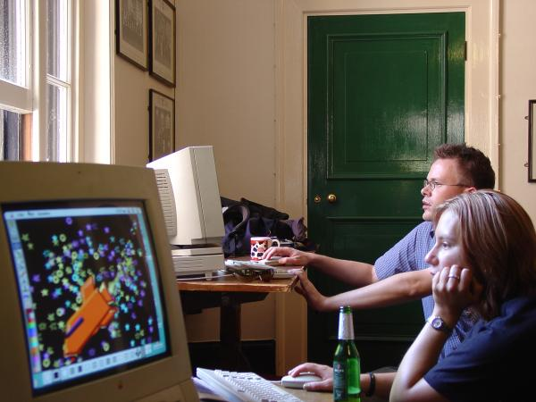

60 James Christie, Jenni Scott, Jeremy Dennis. On Sunday the exhibition was re-erected in its traditional place. We set up three old Macs with a drawing program aimed at children called KidPix (www.kidpix.com/). Artwork by Damian Cugley.
60
James Christie,
Jenni Scott,
Jeremy Dennis.
On Sunday the exhibition was re-erected in its traditional place. We set up three old Macs with a drawing program aimed at children called KidPix (www.kidpix.com/). Artwork by Damian Cugley.

61
James Christie,
Jenni Scott.
Drawing on the 'art machines'. Artwork by Damian Cugley.